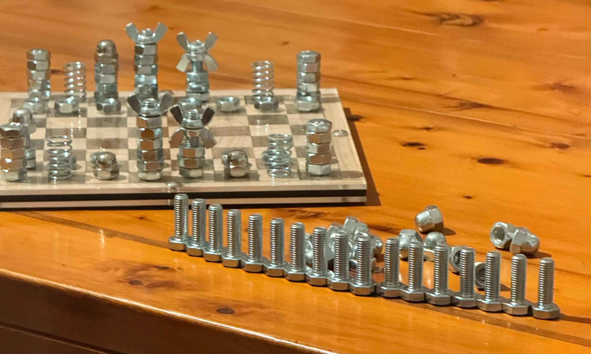
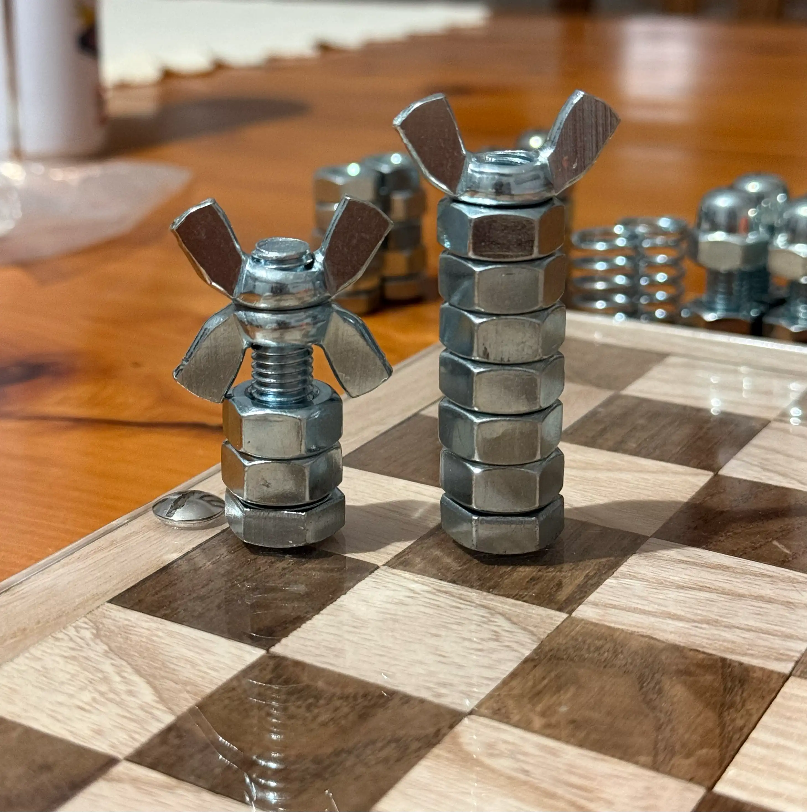
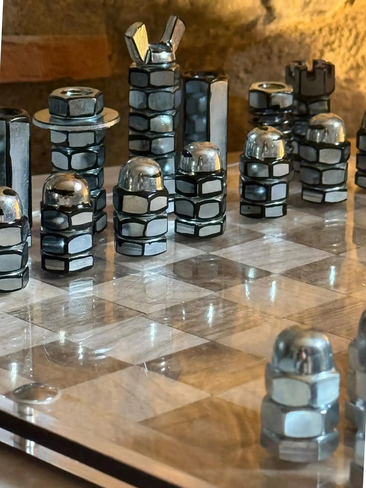
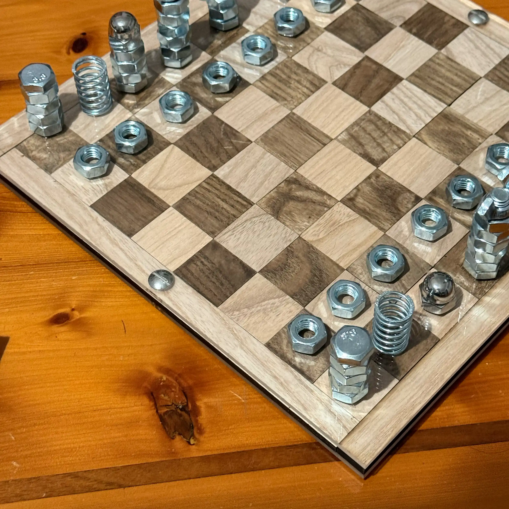

a not so permanent work of art

I was surprised when I discovered that art production also, like the design one, leaves behind a lot of waste - even the opera itself if, after the exhibition no one offers a place for it, get thrown away. I'm not saying that is wrong or right, but I wanted to explore the idea of an art piece that leave no waste, or traces. This is why I developed this chess set that can be completely disassembled. It actually started as a challenged with my friend Max when we experimented challenged each other in making a set with no glue.
For this set I was deeply inspired by the work of Lorenzo Damiani. Ciotola 152 and H20. Using what's already there to create something new. Finding the poetic in what is everyday in front of our eyes. In this case, screws and nuts for the pieces, and leftovers materials for the board.

It makes me feel good that what I'm making will not last forever. I always tought art is made to be remembered and make the artist be remembered. Why? I don't know, maybe because museum are full of old stuff. Probably when the frames are not exposed they are kept in a warehouse. This set mayeb will end up in a pipe, as a whiteboard, in a toaster, who knows... The set counts 32 pieces, 16 for each side made with the same screws and nuts. The black set is then treated to obtain a darker color and make the game playable. The treatment for the black pieces, still preserve the possibility of taking all the nuts and bolts apart.

The board is made out of 2 sheets of polycarbonate that holds scrap pieces of wood together with 4 screws and nuts. The "soul of the chessboard" is contained inbetween two layers of new materials. I wanted to insert new materials, combined with scrap, to show how we can take care of the past, without renouncing to affirm ourselves as a new generation.
